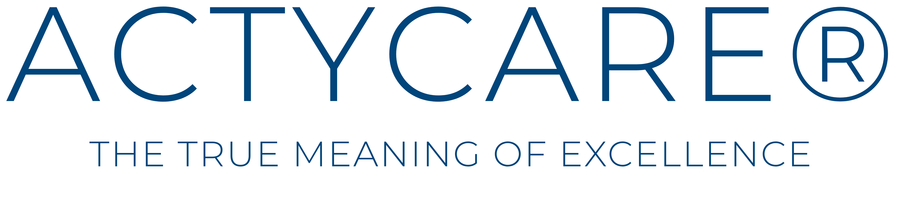

Confiança
Soluções que preservam a qualidade da formulação e acompanham as exigências crescentes do mercado cosmético, com rastreabilidade e consistência técnica.



ACTYCARE® by ATC® CHEMICALS
Uma linha de especialidades conservantes para aplicações em cuidados pessoais e cosméticos, desenvolvida para formulações que exigem segurança, desempenho e sofisticação em cada detalhe.
The true meaning of excellence
ACTYCARE® é a linha de preservantes da ATC® CHEMICALS desenvolvida para o universo de cuidados pessoais, cosméticos e dermocosméticos. Ela reúne soluções pensadas para proteger formulações, preservar sua estabilidade e sustentar uma experiência sensorial refinada.
Mais do que acompanhar tendências, ACTYCARE® foi concebida para atender projetos que valorizam consistência técnica, compatibilidade formulativa e alto padrão de qualidade em cada detalhe.
Soluções que preservam a qualidade da formulação e acompanham as exigências crescentes do mercado cosmético, com rastreabilidade e consistência técnica.
Sistemas conservantes eficazes em ampla faixa de pH, compatíveis com diferentes matrizes e testados para garantir proteção microbiológica real.
Onde ciência e sensorial se encontram. Ingredientes que não comprometem a textura, o aroma e a proposta das formulações.
Origem francesa
Com influência francesa e visão internacional, ACTYCARE® nasce da união entre conhecimento aplicado, precisão técnica e elegância. Essa herança inspira soluções que respeitam a identidade de cada produto e reforçam a diferença entre o comum e o excepcional.
Soluções ACTYCARE®
Sistemas pensados para contribuir com a segurança e a integridade de cosméticos e produtos de cuidado pessoal.
Apoio técnico para formulações que precisam manter performance, identidade e qualidade ao longo do tempo.
Aplicável a formulações cosméticas leave-on e rinse-off, incluindo emulsões, géis, sistemas aquosos, bases tensoativas e diferentes plataformas para cuidados pessoais.
Aplicações em cremes, loções, shampoos, condicionadores, sabonetes líquidos, maquiagens, protetores solares, lenços umedecidos e demais formulações cosméticas que exigem preservação eficaz, estabilidade e cuidado em cada detalhe.
ACTYCARE® by ATC